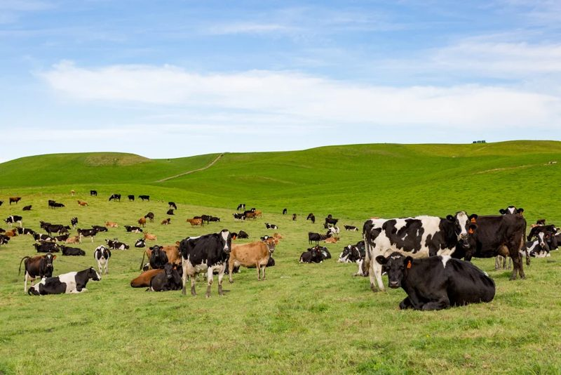
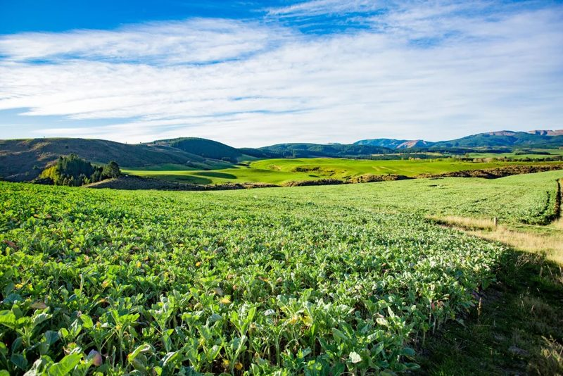
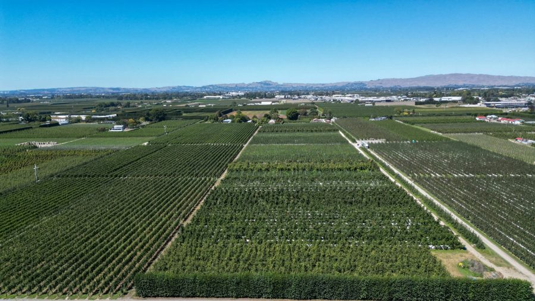

The NZ dairy sector – A cornerstone of the NZL’s portfolio
Why dairy land provides a reliable income base within a diversified rural land portfolio.
Articles on the pastoral, horticulture and forestry sectors we invest in, what drives New Zealand farmland values and how we manage our properties.

Why dairy land provides a reliable income base within a diversified rural land portfolio.

How spreading investment across different land uses strengthens a rural land portfolio.

Why rural land matters as geopolitical risk, inflation and trade disruption reshape investing.

What recent changes to New Zealand's Emissions Trading Scheme mean, beyond the drop in carbon prices.

How tariffs and trade disruption are shaping New Zealand's export landscape.

Where to find long-term stability amid inflation, strained supply chains and financial uncertainty.

The board's site visit to our Hawke's Bay orchards with the NZRLM directors and team.

How we put sustainable land management into practice through specialist operators.
New Zealand horticulture's growth, with export revenue up 19% to $8.4 billion in the year to 30 June 2025.

A different way to invest in property, beyond the traditional rental.

How carbon stored in soil can improve farm productivity and help address climate change.

What REINZ farm sales figures for early 2024 mean for rural land.
X (article text to be confirmed)
New articles on New Zealand rural land, plus market recaps and company updates.